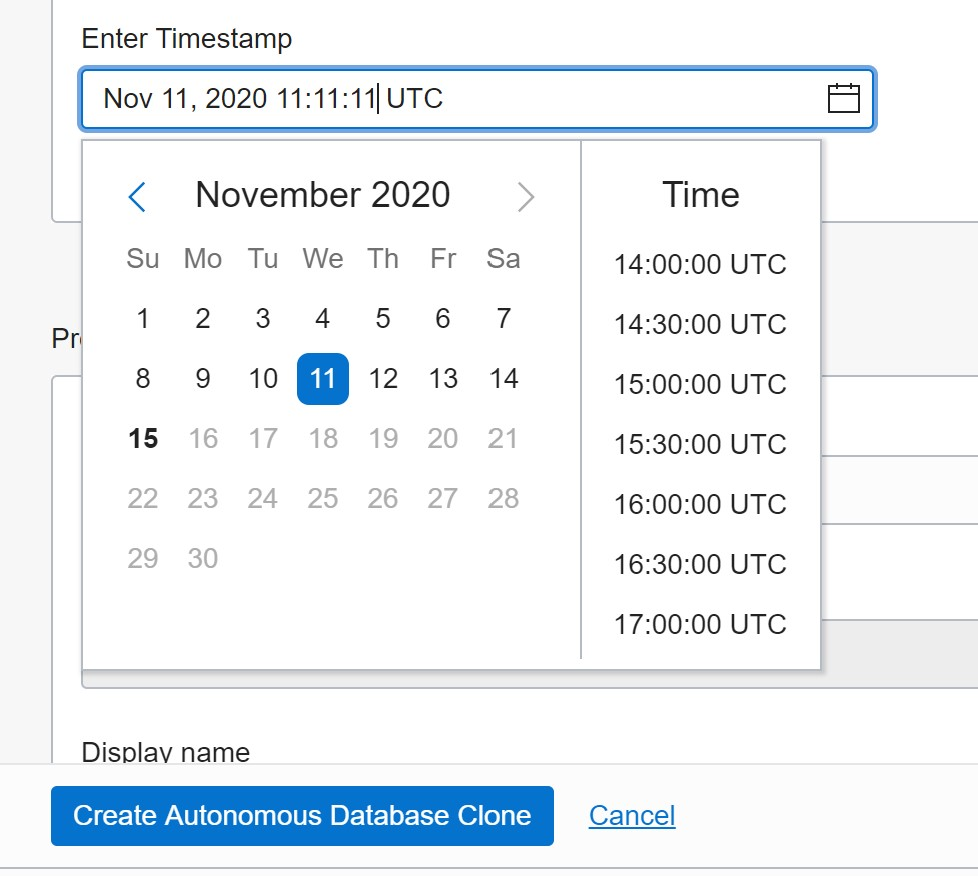
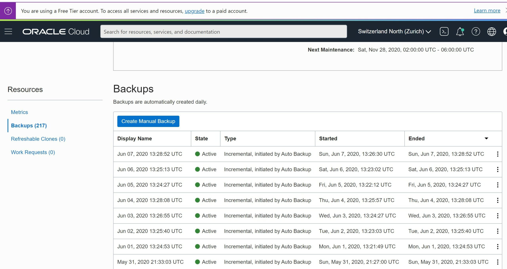
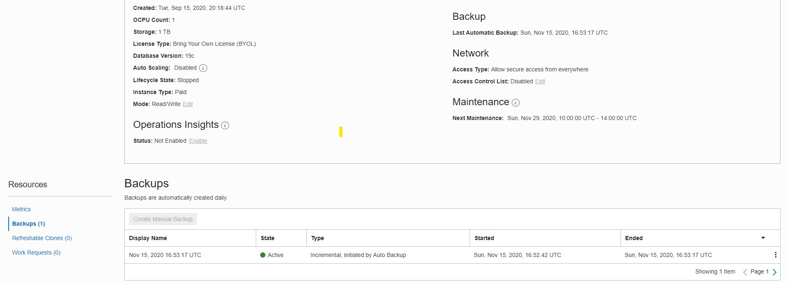
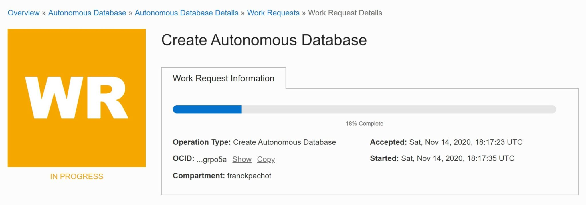
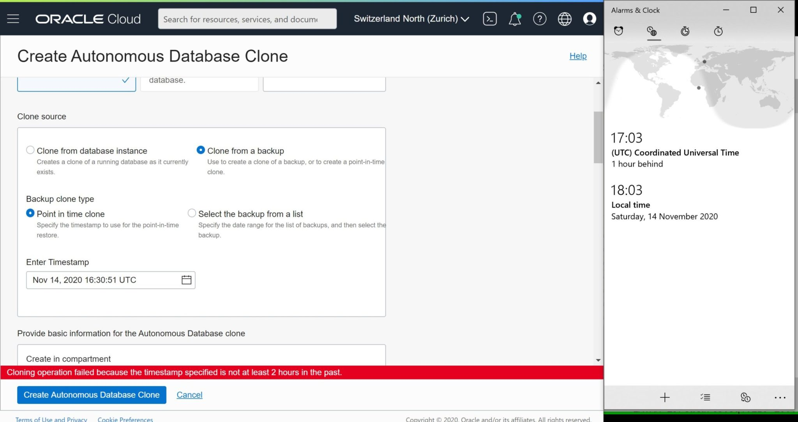

This was first published on https://www.dbi-services.com/blog/recovery-in-the-%e2%98%81-with-oracle-autonomous-database/ (2020-11-18)
Republishing here for new followers. The content is related to the versions available at the publication date.
.
I’ll start this series with the Oracle Autonomous database but my goal is to cover the Point In Time recovery for many managed databases in the major cloud providers. Because I’ve seen lot of confusion about database backups (see What is a database backup (back to the basics)). On one side, in a managed database, we should not have to care about backups, but only about recovery. The way it is done (backups, redo archiving, snapshots, replication…) is not in our responsibility on a managed service. What we want is an easy way to recover the database to a past Point In Time within a recovery window (the recovery point – RPO) and in a predictable time (the recovery time – RTO). However, I’m certain that it is important to know how it is implemented behind this “recovery” service.
What I like the most with the Oracle Autonomous Database is that there is no “restore” or “recovery” button on the database service actions. There is one when you go to the list of backups, in order to restore the database in-place from a previous backup. But this is not the common case of recovery. When you need recovery, you probably want to create a new database. The reason is that when you recover to a Point In Time in the past, you probably want to connect to it, check it, read or export data from it, without discarding the transactions that happened since then in the original database. And you are in the cloud: it is easy to provision a new clone and keep the original database until you are sure to know what you need to do (merging recent transactions into the clone or fixing the original database from the clone data). In the cloud, a Point-In-Time Recovery (PITR) is actually a “clone from backup” or “clone from timestamp”. And this is exactly how you do it in the Oracle Autonomous Database: you create a new clone, and rather than cloning from the current state you choose to clone from a previous state, by mentioning a timestamp or a backup.

I have a PL/SQL loop constantly updating a timestamp in a DEMO table:
SQL> exec loop update demo set ts=sys_extract_utc(current_timestamp); commit; end loop;
I just kept that running.
Later I created a a clone with 21:21:21.000 as recovery point in time:
[opc@a demo]$ oci db autonomous-database create-from-backup-timestamp --clone-type FULL --timestamp 2020-11-14T21:21:21.000Z --db-name clone --cpu-core-count 1 --data-storage-size-in-tbs 1 --admin-password COVID-19-Go-Home --autonomous-database-id ocid1.autonomousdatabase.oc1.iad.abuw...
and once opened, I checked the state of my table:
SQL> select * from demo;
TS
------------------------
2020-11-14T21:21:19.368Z
This is less than 2 seconds before the mentioned recovery point-in-time. RPO is minimal.
With the Oracle Autonomous Database, you always have the possibility to recover to any point in time during the past 2 months. Always: without any additional configuration, without additional cost, and even in the always free tier. You can run additional manual backups but you cannot remove those automatic ones, and you cannot reduce this recovery window.
Here is the documentation:
About Backup and Recovery on Autonomous Data Warehouse
Autonomous Data Warehouse automatically backs up your database for you. The retention period for backups is 60 days. You can restore and recover your database to any point-in-time in this retention period.
This is great. You don’t have to worry about anything in advance. And if something happens (can be a user error dropping a table, updating wrong rows, an application release that messes up everything, a legal request to look at past data,…) you can create a clone of the database at any state within this 60 days timeframe. And these 60 days is the minimum guaranteed. I have a small free-tier database where I can still see the backups from the past 6 months:

I have another database that is stopped for 2 months:

This is a very important point. If you rely only on restoring a backup, without the possibility to recover to a further Point In Time, you have the risk that any problem in the backup compromises your recovery. Here, even if the last backup has a problem (you should always design for failure even if the probability of it is low) I can recover from the previous one and recover. It will take longer (24 hours of activity to recover) but data will be there, and consistent, to the requested point in time.
When you know how Oracle Database backups work, you know that any backup configuration mentions either a number of backup (please, always more than one) or a recovery window (which hopefully will contain more than one), bot not both:
RMAN> show all;
using target database control file instead of recovery catalog
RMAN configuration parameters for database with db_unique_name CDB1A_IAD154 are:
CONFIGURE RETENTION POLICY TO REDUNDANCY 1; # default
RMAN> configure retention policy to recovery window of 60 days;
new RMAN configuration parameters:
CONFIGURE RETENTION POLICY TO RECOVERY WINDOW OF 60 DAYS;
new RMAN configuration parameters are successfully stored
In a managed database you don’t have to configure this. But knowing how it works will give you confidence and trust in the data protection. Here for my closed database I can see only one backup.
How long does it take to restore the database? This is proportional to the size. But when you understand that a restore is not sufficient and recovery must apply the redo logs to bring all database files to be consistent to the recovery point-in-time, you know it can take longer. As automatic backups are taken every day, you may have 24 hours to recover. And understanding this may help. If you have the choice to select a point-in-time not too far after the end of the backup, then you can minimize the RTO. This is where you may choose “select the backup from the list” rather than “Point In Time clone”. But the, you may increase the RPO.
My main message is: even in a managed service where you are not the DBA, it is important to understand how it works. There is nothing like “restore a backup”. Recovery always happens and your goal when you select the recovery point-in-time is to minimize the RTO for the required RPO. Recovery has to restore the archived logs, read them and apply the relevant redo vectors. And with the Oracle Autonomous Database, this redo stream is common for all databases (redo is at CDB level if you know the multitenant architecture). This can take time for your database even if you didn’t have a lot of updates in your database (which is a PDB). Most of the redo will be discarded, but they have to be restored and read sequentially. In order to verify that, I’ve selected a point-in-time from this morning for the database that was stopped 2 months ago. The last backup is 2 months before the Point In Time to recover to. If you take this as a black box, you may think that this will be very fast: no updates to recover because the database was closed most of the time. But actually, this has to go through 2 months of redo for this database shared by many users. While writing this, the progress bar is showing “18%” for three hours… This could be avoided if the whole CDB was backed-up every day, because a closed autonomous database is just a closed PDB – files are still accessible for backup. Is it the case? I don’t know.
Finally, this recovery took nearly 5 hours. And then I am not sure whether it really restored the datafiles from 2 months ago, and then restoring this amount of archived logs was really fast, or from a more recent backup taken while the database was closed, not visible in the list of backups. Because I see 74 TeraBytes of archived logs during those 60 days:
select dbms_xplan.format_size(sum(blocks*block_size))
from gv$archived_log where dest_id=1 and first_time>sysdate-60;
DBMS_XPLAN.FORMAT_SIZE(SUM(BLOCKS*BLOCK_SIZE))
----------------------------------------------
74T
And I would be very surprised that they can restore and recover this amount in less than 5 hours… But who knows? We don’t have the logs in a managed database.
Note that this is a shared infrastructure managed database. You have also the choice to provision a dedicated autonomous database when you need better control and isolation. What I’m saying is that if you don’t know it, you will make mistakes. Like this one: as the database was stopped for 2 months, I should have selected a point-in-time closer to the last backup. It could have taken 1 hour instead of 5 hours (I tested it on the same database). I’ve been working on production databases for 20 years, in many companies. I can tell you that when a problem will happen in production, and you will have to recover a database, you will be surrounded by managers asking, every five minutes, how long this recovery will take. The better you understand the recovery process, the more comfortable you will be.
Just imagine that you are in this situation and the only information you have is this 18% progress bar that is there for two hours:

Managed services have always more limitations because the automation that is behind must standardize everything. When trying to recover from a RPO that is just 30 minutes ago, I hit a limitation. I’ve not seen it documented but the message is clear: Cloning operation failed because the timestamp specified is not at least 2 hours in the past.

DEMO@atp1_tp> select * from v$archive_dest where status='VALID';
DEST_ID DEST_NAME STATUS BINDING NAME_SPACE TARGET ARCHIVER SCHEDULE DESTINATION LOG_SEQUENCE REOPEN_SECS DELAY_MINS MAX_CONNECTIONS NET_TIMEOUT PROCESS REGISTER FAIL_DATE FAIL_SEQUENCE FAIL_BLOCK FAILURE_COUNT MAX_FAILURE ERROR ALTERNATE DEPENDENCY REMOTE_TEMPLATE QUOTA_SIZE QUOTA_USED MOUNTID TRANSMIT_MODE ASYNC_BLOCKS AFFIRM TYPE VALID_NOW VALID_TYPE VALID_ROLE DB_UNIQUE_NAME VERIFY COMPRESSION APPLIED_SCN CON_ID ENCRYPTION
__________ _____________________ _________ ____________ _____________ __________ ___________ ___________ ____________________________ _______________ ______________ _____________ __________________ ______________ __________ ___________ ____________ ________________ _____________ ________________ ______________ ________ ____________ _____________ __________________ _____________ _____________ __________ ________________ _______________ _________ _________ ____________ _______________ _____________ _________________ _________ ______________ ______________ _________ _____________
1 LOG_ARCHIVE_DEST_1 VALID MANDATORY SYSTEM PRIMARY ARCH ACTIVE USE_DB_RECOVERY_FILE_DEST 3,256 300 0 1 0 ARCH YES 0 0 0 0 NONE NONE NONE 0 0 0 SYNCHRONOUS 0 NO PUBLIC YES ALL_LOGFILES ALL_ROLES NONE NO DISABLE 0 0 DISABLE
DEMO@atp1_tp> select stamp,dest_id,thread#,sequence#,next_time,backup_count,name from v$archived_log where next_time > sysdate-2/24;
STAMP DEST_ID THREAD# SEQUENCE# NEXT_TIME BACKUP_COUNT NAME
________________ __________ __________ ____________ ______________________ _______________ ________________________________________________________________________
1,056,468,560 1 1 3,255 2020-11-14 15:29:14 1 +RECO/FEIO1POD/ARCHIVELOG/2020_11_14/thread_1_seq_3255.350.1056468555
1,056,468,562 1 2 3,212 2020-11-14 15:29:16 1 +RECO/FEIO1POD/ARCHIVELOG/2020_11_14/thread_2_seq_3212.376.1056468557
1,056,472,195 1 2 3,213 2020-11-14 16:29:51 1 +RECO/FEIO1POD/ARCHIVELOG/2020_11_14/thread_2_seq_3213.334.1056472191
1,056,472,199 1 1 3,256 2020-11-14 16:29:52 1 +RECO/FEIO1POD/ARCHIVELOG/2020_11_14/thread_1_seq_3256.335.1056472193
DEMO@atp1_tp> select * from v$logfile;
GROUP# STATUS TYPE MEMBER IS_RECOVERY_DEST_FILE CON_ID
_________ _________ _________ __________________________________________________ ________________________ _________
2 ONLINE +DATA/FEIO1POD/ONLINELOG/group_2.276.1041244447 NO 0
2 ONLINE +RECO/FEIO1POD/ONLINELOG/group_2.262.1041244471 YES 0
1 ONLINE +DATA/FEIO1POD/ONLINELOG/group_1.275.1041244447 NO 0
1 ONLINE +RECO/FEIO1POD/ONLINELOG/group_1.261.1041244471 YES 0
5 ONLINE +DATA/FEIO1POD/ONLINELOG/group_5.266.1041245263 NO 0
5 ONLINE +RECO/FEIO1POD/ONLINELOG/group_5.266.1041245277 YES 0
6 ONLINE +DATA/FEIO1POD/ONLINELOG/group_6.268.1041245295 NO 0
6 ONLINE +RECO/FEIO1POD/ONLINELOG/group_6.267.1041245307 YES 0
3 ONLINE +DATA/FEIO1POD/ONLINELOG/group_3.281.1041245045 NO 0
3 ONLINE +RECO/FEIO1POD/ONLINELOG/group_3.263.1041245057 YES 0
4 ONLINE +DATA/FEIO1POD/ONLINELOG/group_4.282.1041245077 NO 0
4 ONLINE +RECO/FEIO1POD/ONLINELOG/group_4.264.1041245089 YES 0
7 ONLINE +DATA/FEIO1POD/ONLINELOG/group_7.267.1041245327 NO 0
7 ONLINE +RECO/FEIO1POD/ONLINELOG/group_7.268.1041245339 YES 0
8 ONLINE +DATA/FEIO1POD/ONLINELOG/group_8.279.1041245359 NO 0
8 ONLINE +RECO/FEIO1POD/ONLINELOG/group_8.269.1041245371 YES 0
As you can see, the Autonomous Database has two threads (RAC two nodes) with 4 online redo log groups (the Autonomous Database is not protected by Data Guard even if you enable Autonomous Data Guard… but that’s another story) and two members each. And the online logs are archived and backed up. All is there to be able to recover within the past 2 hours. But probably those archived logs are shipped to a dedicated destination to be recovered by the PITR feature “clone from timestamp”.
Anyway, this is a managed service and you must do with it. You don’t want the DBA responsibility, and then you lack some control. Again, if you understand it, everything is fine. In case of failure, you can start to create a clone from 2 hours ago and look at what you can do to repair the initial mistake. And two hours later, you know that you can create another clone which is recovered to the last second before the failure.
The Oracle Autonomous Database does not provide all the possibilities available when you manage it yourself, but it is still at the top of the main cloud-managed database services: RPO is at second between 2 hours ago and 60 days ago. RTO is in few hours even when dealing with terabytes. This, without anything to configure or pay in addition to the database service, and this includes the always free database. If the database is stopped during the backup window, the backup is skipped but at least one remains even if out of the retention window.